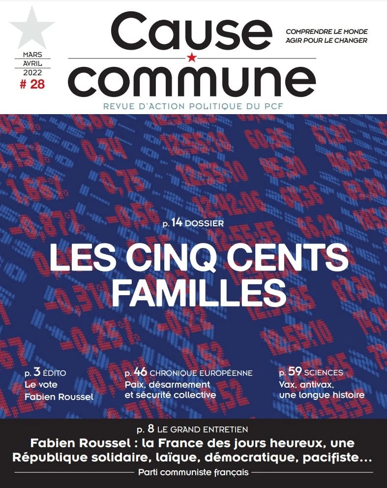
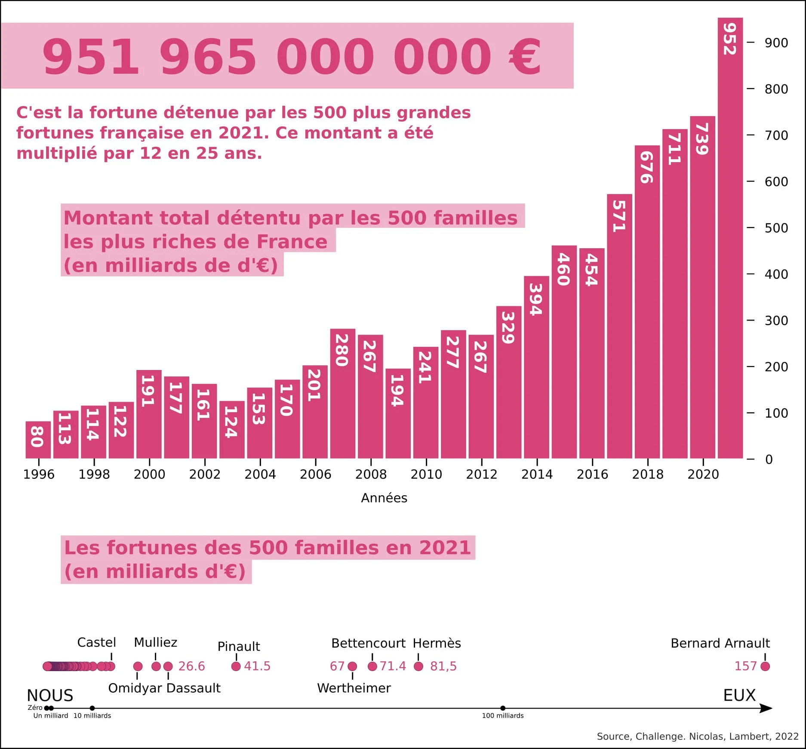

Publication d’archives
L'argent magique.
Date indiquée par Facebook · 29 mars 2022
Texte conservé avec la publication
Contexte du dossier
Le 17 mars, la remise gouvernementale de quinze centimes sur le carburant est jugée insuffisante. La page lui oppose la récupération des profits pétroliers, en reprenant une proposition de Fabien Roussel. Le 29 mars, elle revient sur la concentration des fortunes pour réfuter le discours de l’« argent magique » : la question porte sur l’utilisation de richesses bien réelles.
Pour les retraités, le rendez-vous régional annoncé le 24 mars devant l’hôpital de Niort donne lieu à un compte rendu faisant état de près d’un millier de personnes. Leurs demandes associent revalorisation durable, accès aux soins et services publics proches. Les trois publications consacrées au 1er Mai — annonce du rendez-vous du Clou-Bouchet, appel à la riposte sociale, salut aux travailleuses et travailleurs — prolongent ce fil. Ces messages revendiquent une place collective face à la vie chère ; ils n’établissent pas, à eux seuls, un bilan chiffré de cette journée.


Sources
Archive rouge · export Facebook · AR-0002-FB-01912
À lire aussi · Infâme: à Noël Macron dépouille les chômeurs